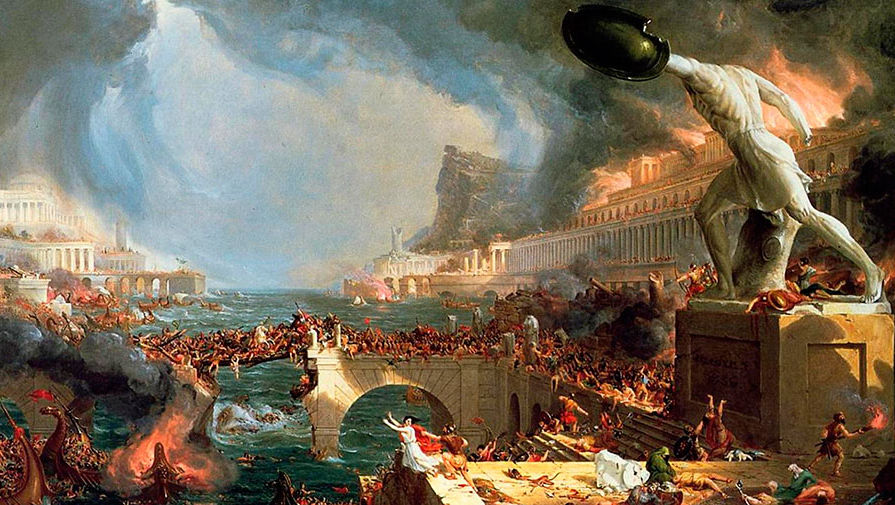
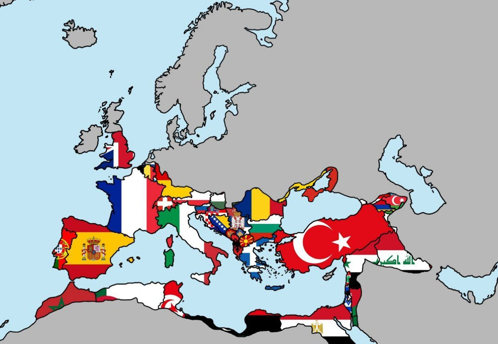

Ри́мская импе́рия (лат. Imperium Romanum) — постреспубликанский период истории Древнего Рима.
Как государство Римская империя включала большие территориальные владения вокруг Средиземного моря в Европе,
Северной Африке и Западной Азии, управляемые императорами. От восшествия на престол Цезаря Августа
в качестве первого римского императора до военной анархии третьего века Римская империя была принципатом с Италией
в качестве метрополии своих провинций и городом Римом в качестве единственной столицы. Позже империей правили несколько императоров,
которые разделяли контроль над Западной Римской империей и Восточной Римской империей. Рим оставался номинальной столицей обеих частей
до 476 года нашей эры, когда имперские знаки отличия были отправлены в Константинополь после захвата западной столицы Равенны германскими варварами под предводительством
Одоакра и последующего низложения Ромула Августула. Принятие христианства в качестве государственной религии Римской империи в 380 году нашей эры и
падение Западной Римской империи под власть германских королей условно знаменует собой конец классической античности и начало Средневековья. Из-за этих событий,
наряду с постепенной эллинизацией Восточной Римской империи, историки выделяют средневековую Римскую империю, оставшуюся в восточных провинциях, как Византийскую империю

Римская империя просуществовала 500 лет,
от провозглашения Октавиана Августа императором
в 27 г. до н. э. до падения Западной Римской империи в 476 г.
К 285 году империя разрасталась слишком быстро, и правители Рима не смогли эффективно управлять её дальними землями. Поэтому,
по решению Гая Аврелия Валерия Диоклетиана империя (284-305) была поделена на Западную и Восточную. Зарождение империи принято считать,
когда Август Цезарь (27-14 до н.э.) стал её первым императором на Западе и упадком во время правления Флавия Ромула Августа (475-476),
когда его свергнул германский король Одоакр (476-493). Что касается Восточной Римской Империи (но чаще её называют Византией),
то она просуществовала куда дольше – до 1453 года, когда её последний правитель - Константин II (1449-1453) не справился с гнетом османов,
которые захватили город. Тогда Восточная Римская Империя прекратила своё существование. Влияние Римской Империи на восточные цивилизации было колоссальным,
поскольку она внесла огромный вклад в развитие каждого аспекта жизни западной культуры.
Затянувшейся агонии Западной Римской империи положил конец скир Одоакр: в 476 году он сверг последнего западно-римского императора Ромула Августа, отослал знаки высшей власти византийскому императору Зенону и основал на территории Италии собственное варварское королевство.

Во владениях Римской империи в Африке сейчас расположены - br
Марокко, Алжир, Тунис, Ливия, Египет.
Во владениях римлян в Азии расположены - Турция,
Ливан, Палестина, Израиль, Иордания, Ирак, Сирия, Армения, Грузия
